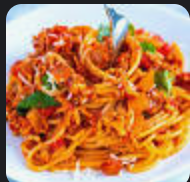

Spaghetti

How to make delicious spaghetti
Ingredients
- Spaghetti noodles
- Tomato sauce
- Ground turkey
- Onions
Steps
- Cook ground turkey in pan
- Chop onions and cook in pan
- Mix turkey and onions
- Pour in tomato sauce
- Cook for 30 min
- Boil spaghetti noodle for 11 min